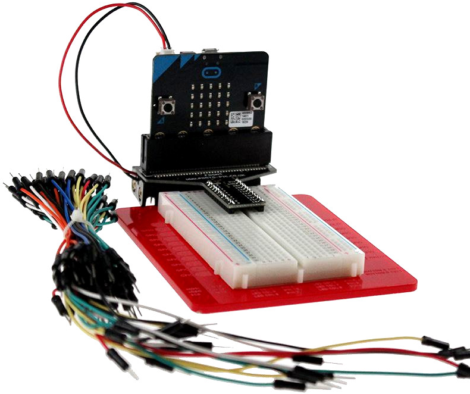

Programmation BBC micro:bit#
Mise en situation#

BBC micro:bit est un mini-ordinateur programmable de poche (une carte à microcontrôleur) conçu pour développer votre créativité avec la technologie.
Kesako ? ...

Ce petit appareil intègre beaucoup de fonctionnalités : il a 25 LED rouges qui peuvent afficher des messages, et deux boutons programmables pouvant être utilisés pour contrôler des jeux, ou, par exemple, faire une pause et sauter des chansons sur une liste de lecture ;
Le BBC micro:bit peut détecter le mouvement, la température, la luminosité, et vous dire dans quelle direction vous vous dirigez ;
Il peut aussi utiliser une connexion Bluetooth à faible énergie pour interagir avec d'autres appareils et Internet.

Ce petit ordinateur possède la dernière technologie qui équipe les appareils modernes : téléphones mobiles, réfrigérateurs, montres intelligentes, alarmes antivol, robots, etc...
Ainsi, il s'apparente à ce que l'on nomme l'Internet des objets : Internet of Things, abrégé IoT.
Grâce à la connexion à l'IoT, nous pouvons interagir avec un large éventail de capteurs à travers le monde entier en temps réel et nous pouvons maintenant prendre des décisions intelligentes en utilisant nos appareils.
Un micro:bit est à la fois autonome et extensible. En plus d'utiliser ses LED intégrées, boutons et capteurs, nous pouvons élargir sa gamme de fonctions en l'insérant dans un connecteur comme ci-contre.
Donc finalement, micro:bit est tout ce que vous pouvez imaginer. Vous pouvez le transformer en votre dispositif de messagerie, console de jeu, vêtement intelligent, alarme antivol, contrôleur de maison intelligente...
A peu près tout ce que votre imagination peut créer en utilisant des capteurs supplémentaires, en réalisant un boitier ou un support pour la carte, et en programmant son microcontroleur.
Historique ...
La BBC a initié en 2015 le projet Micro:bit, qui se veut être un nano-ordinateur à carte unique à processeur ARM destiné à l’éducation.
L’objectif de cette dernière : fournir à chaque écolier de 12 ans (« year 7 ») un support amusant et facile à utiliser.
Au début des années 80, le groupe de chaînes publiques au Royaume-Uni, la « British Broadcasting Corporation », dite BBC, lança un appel à projet pour créer un ordinateur éducatif à destination des écoliers et des écoles. Une jeune entreprise de Cambridge « Acorn » (« gland » en anglais) fut retenue pour créer cette plateforme. Le « BBC Micro » était né.

Dans la même période, ici en France, nous avons connu une initiative comparable avec le Plan Informatique pour Tous basé sur des micro-ordinateurs Thomson MO5 et TO7.
Plus récemment, quand les membres fondateurs du Raspberry Pi commencèrent à concrétiser leurs rêves d’un nano-ordinateur éducatif, ils voulurent y inscrire en guise de clin d’œil le label « BBC ». Ce droit ne leur fut pas octroyé ; néanmoins un journaliste high-tech de la célèbre « Corporation » sur son blog et sur la chaîne YouTube leur donna un coup de projecteur qui lancera le mouvement autour du Raspberry Pi.

L'idée du Raspberry Pi 400 d'inclure un ordinateur complet dans un clavier s'inspire donc des machines des années 80 telles que ce BBC micro :
L’histoire se répète donc trente ans plus tard, la BBC s’est « remis dans le bain » en lançant un objectif très ambitieux : envisager un « ordinateur de poche programmable permettant aux enfants d’explorer la créativité technologique ».

Elle voulait formuler une réponse à la fracture numérique et aux lacunes perçues des compétences informatiques des citoyens. Dans l’environnement fertile des startups technologiques du Royaume Uni et inspiré par l’énergie des « makers » et « programmeurs » autour des cartes « hackables » comme l’Arduino, le Raspberry Pi, Beaglebone et bien d’autres, la BBC a de nouveau monté une initiative d’éducation numérique dans la continuité du projet « Make It Digital » (créer le numérique). Ils ont su rapidement rassembler une trentaine de partenaires et des industriels.
Aujourd’hui, ces partenaires sont réunis dans la Fondation Micro:bit et présente la version 2...
Programmation#
Il existe différentes façon de programmer la carte BBC micro:bit, au lycée, nous allons privilégier celle basée sur MicroPython une version allégée de Python créée par Damien George pour la programmation de certains microcontôleurs dont celui du BBC micro:bit.
Le code source du compilateur MicroPython pour BBC micro:bit a été réalisé par des personnes bénévoles du monde entier, sous la direction de Damien George, Nicholas Tollervey et Carlos Pereira Atencio...
On peut désormais utiliser la version 3 de l'éditeur micropython en ligne qui possède un simulateur intégré...
Processus de programmation#
L'éditeur MicroPython officiel en ligne#
- Cliquer sur le bouton ci-dessus pour ouvrir l'éditeur dans un nouvel onglet ;
- Glisser/déposer des bouts de code du menu de gauche dans la zone centrale d'édition ;
- Tester le résultat de ces instructions dans le simulateur ;
- Modifier le code dans l'éditeur pour répondre au besoin ;
- Vérifier le résultat de votre script dans le simulateur ;
- Transférer votre programme dans une carte BBC micro:bit raccordée au PC avec un cable USB ;
- Expérimenter sur le matériel réel ;
- Recommencer jusqu'à validation des exigences du cdcf...
Ressource : Python Editor : Guide
Bac à sable pour BBC micro:bit dans Capytale avec Vittascience#
Autres solutions de programmation :
L'éditeur Mu sur PC#
A partir de Cortana, rechercher et lancer l'application de bureau Mu, au démarage choisir le mode BBC micro:bit
Par rapport à l'éditeur en ligne, cette application offre des fonctionnalités supplémentaires très intéressantes accessibles par ces quatres boutons :

Remarque : ces boutons ne fonctionnent que s'il y a une carte BBC micro:bit connectée par un câble USB au PC.
Ces fonctions sont exposées dans ce rapide tutoriel : https://codewith.mu/en/tutorials/1.0/microbit
Cliquer sur le bouton “Flash” permet en quelques secondes de téléverser votre code dans la mémoire flash du µC du BBC micro:bit en effaçant et remplaçant le programme précédent. En cas d'erreur dans votre code un message défilera sur la matrice à LED.

Lorsqu'un programme MicroPython est téléversé dans un BBC micro:bit, il dispose d’un répertoire permettant de stocker des fichiers. Le bouton «Fichiers» de Mu facilite l’accès, la mise en place, la récupération et la suppression de fichiers sur votre appareil.
Comme indiqué ci-dessous, cliquer sur «Fichiers» ouvre deux panneaux entre l’éditeur de texte et le pied de page de Mu. Le volet de gauche répertorie tous les fichiers du dossier BBC micro:bit, le volet de droite répertorie tous les fichiers de votre répertoire mu_code sur votre ordinateur. Faites glisser les fichiers de l'un à l'autre pour les copier. Pour supprimer un fichier sur le BBC micro:bit, cliquez dessus avec le bouton droit de la souris et sélectionnez «Supprimer».

Remarque : cette fonction n'est disponible que si vous avez préalablement chargé un fichier en MicroPython sur la carte.
Le bouton «REPL» crée un nouveau volet entre l’éditeur de texte et le pied de page de Mu, qui se connecte à l'interpréteur MicroPython du périphérique BBC micro:bit. Le terme “REPL” est un acronyme et signifie “Lire, Évaluer, Imprimer, Boucler”, (Read-Evaluate-Print-Loop), ce qui décrit succinctement ce que le panneau fait pour vous. Il lit les instructions de Python que vous tapez, évalue leur signification, affiche le résultat obtenu, puis effectue une boucle pour attendre votre prochaine instruction Python.

Comme vous pouvez le constater dans l'exemple ci-dessus, utiliser le REPL de MicroPython revient à avoir une conversation avec le BBC micro:bit en Python. Tout ce que vous pouvez faire dans un script Python classique, vous pouvez le faire dans le REPL. C’est une façon amusante d’explorer de façon ludique les capacités de MicroPython sur le BBC micro:bit.
C'est donc le moment d'essayer des choses... Par exemple, commencez par taper help()dans le REPL de l'éditeur Mu et laissez-vous guider par les propositions suggérées là... Saurez-vous y découvrir le Zen de MicroPython ?
Enfin, le bouton "Plot" ouvre le traceur de Mu. Si votre BBC micro:bit produit des tuples de nombres via la connexion série, le traceur les affiche sous forme de graphique. Ceci est extrêmement utile pour visualiser les données que vous pourriez mesurer via le BBC micro:bit. Pour plus d’informations à ce sujet, lisez le tutoriel sur le traceur de Mu.

Le site de l'éditeur Mu : http://codewith.mu et son dépot GitHub : https://github.com/mu-editor/mu
L'éditeur Thonny sur PC#
Autre processus :#
- On peut débuter avec l'éditeur en ligne https://app.edublocks.org/ pour générer un script en python à partir des blocs d'instructions. Le principe consiste à glisser/déposer des blocs d'instructions du menu de gauche dans la zone graphique pour obtenir le code Python correspondant.
- pour tester un programme par simulation, on peut copier/coller le code en Python dans le simulateur de https://create.withcode.uk/ et puis on clique sur le bouton
Runou la combinaison de touchesCtrl+Entréepour l'exécuter... - Enfin, pour valider un programme sur le matériel réel :
- on raccorde une carte BBC micro:bit avec un cable sur un port USB de l'ordinateur. Le PC doit reconnaitre la carte comme un nouveau lecteur nommé :
MICROBIT (E:); - on ouvre l'ancien éditeur micropython officiel https://python.microbit.org/v/2 ;
- on clique sur le bouton
Connect, et on sélectionne la carte"BBC micro:bit CMSIS-DAP"à associer, puis on clique sur le boutonConnexionpour établir la communication ; - Une fois connecté, on clique sur le bouton
Flashpour charger le programme qui s'exécutera dès que la LED jaune située à l'arrière de la carte aura fini de clignoter ; - Pour revoir le résultat du programme une nouvelle fois, il faut redémarrer le BBC micro:bit en appuyant sur le bouton
RESETsitué à l'arrière de la carte...
- on raccorde une carte BBC micro:bit avec un cable sur un port USB de l'ordinateur. Le PC doit reconnaitre la carte comme un nouveau lecteur nommé :
Autres possibilités :#
Cartes d'extensions#
Breadboard#
Yahboom#
4tronix#
Elecfreaks#
Ressources :
RTFD : https://microbit-micropython.readthedocs.io
Le dépot GitHub des codes sources de MicroPython pour le BBC micro:bit et de l'éditeur en ligne : - https://github.com/bbcmicrobit
MicroPython : - Site : http://micropython.org/ - GitHub : - Livre "Programmer avec MicroPython" : https://github.com/ntoll/programming-with-micropython
Support : - https://support.microbit.org/support/home - http://microbit.org/fr/guide/features/ - https://tech.microbit.org/
Modèle 3D du BBC micro:bit https://www.kitronik.co.uk/blog/bbc-microbit-cad-resources/
Sites de profs :
- http://numerique.ostralo.net/microbit/partie0_accueil/0_accueil.htm
- https://physique.david-therincourt.fr/les-bases-de-micropython-pour-la-microbit/
- https://ellasciences.jimdofree.com/python/bbc-micro-bit/
- https://laboiteaphysique.fr/site2/
- https://www.astrovirtuel.fr/microbit/
- https://www.isnbreizh.fr/nsi/activity/microbitRessources/index.html
Des tutoriel et projets :
- http://www.multiwingspan.co.uk/micro.php
- https://learn.adafruit.com/bbc-micro-bit-lesson-number-0/intro
- https://www.instructables.com/id/Microbit-Selfie-Remote/
Quelques projets depuis une Rasberry Pi en MicroPython avec l'éditeur MU :
- https://projects.raspberrypi.org/en/projects/getting-started-with-microbit
- https://projects.raspberrypi.org/en/projects/microbit-selfies
- https://projects.raspberrypi.org/en/projects/microbit-meteorologist
- https://projects.raspberrypi.org/en/projects/micromine-bitcraft
- https://github.com/raspberrypilearning/microbit-game-controller
Micro:bit with Arduino : https://learn.adafruit.com/use-micro-bit-with-arduino/overview